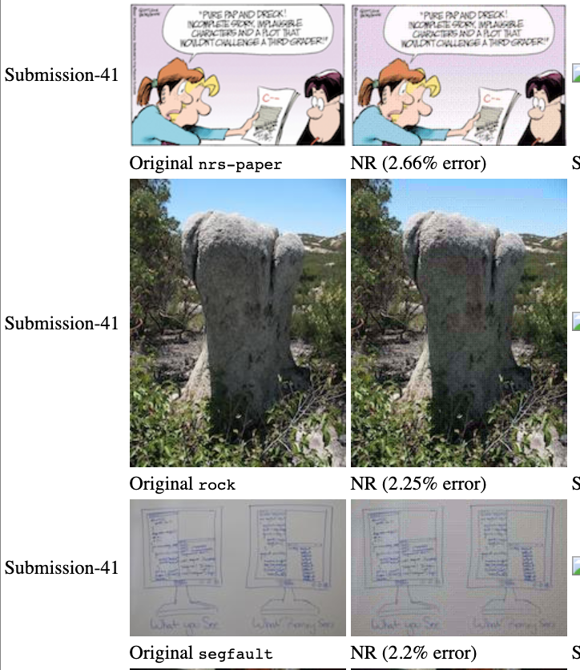

In Spring 2024, I developed a network incident detection tool that enables users to identify potential vulnerabilities and security breaches in network traffic using live network streams or sets of PCAP files for various security incidents. For the sake of academic integrity, I cannot share the code but I can share the results of the code.
WARNING: No IPv4 address found on ap1 !
WARNING: No IPv4 address found on en1 !
WARNING: more No IPv4 address found on en2 !
ALERT #1: FIN Scan is detected from 172.19.47.252 (TCP)
ALERT #2: FIN Scan is detected from 172.19.47.252 (TCP)
...ALERT #11: Nikto Scan is detected from 10.151.31.252 (TCP port 80)
ALERT #12: Nikto Scan is detected from 10.151.31.252 (TCP port 80)
...ALERT #29: HTTP credentials is detected from 10.144.31.242 (Username: redacted, Password: redacted)
ALERT #30: HTTP credentials is detected from 10.144.31.242 (Username: redacted, Password: redacted)
In my sorority, Kappa Alpha Theta, I am the VP of Finance and therefore am in charge of managing the budget. However, other executive board members have to ask me about the budget for their specific events instead of being able to check it themselves. In turn, I created this platform that uses Selenium to scrape my VP of Finance account and access budget information based off one's request.
View ProjectIn my sorority, Kappa Alpha Theta, we have a points system. If you miss events without an excuse, you lose points. If you go to non-required events, you gain points. To be in good standing and be able to go to fun events such as formal, you must be at 0 or positive points. Currently, members have no way of knowing their point values without reaching out to the VP of Administration, who keeps track of everyone's points. We also cannot just have an excel spreadsheet for everyone to view because points are supposed to be private. In order to fix this issue, I created the Theta Tracker. Each user is given a unique password, which they can use to login to this website and check their points. Additionally, I added a dues checker as well since I am VP of Finances and would like to consolidate all of this information into one program. There also is a feature for members to check when their points and dues were last updated.
View ProjectIn Spring 2022, I, along with my classmates Scott Fullenbaum and Grace Hindermann, worked to model and quantify the evolution of music, along with showing how a multitude of influences have shaped music history. We approached the problem by using three different ways to evaluate and model the influence of music over time: a directed graph among artists, least squares regression looking at data vs time, and Neural Networks classifying music by genre. The results of each method are detailed in the paper.
Initial Presentation, including code Final PaperDesigned a web application with 3 classmates that utilizes MongoDB to create user profiles, add workouts, search for relevant exercises in an API, view past workouts, and edit and delete past workouts.
View ProjectIn Fall 2022, my programming partner, Stephen Chakoudian, and I applied a Discrete Cosine Transformation and bit packing techniques to compress a ppm image to a binary file. We utilized bitwise operations to decompress a binary file to a ppm image while averaging 2% data loss.
